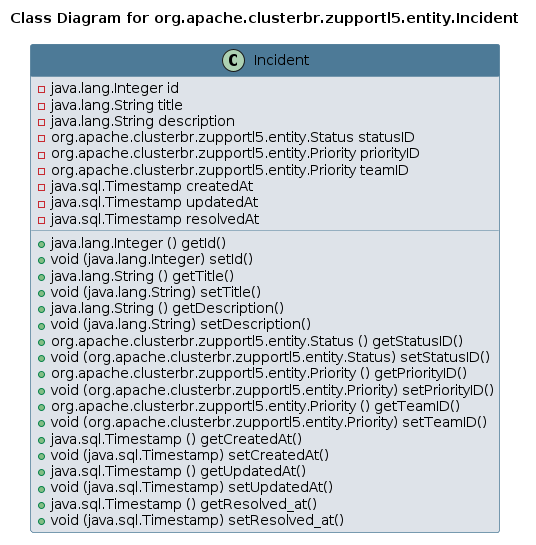

Class Incident
java.lang.Object
org.apache.clusterbr.zupportl5.entity.Incident
UML Diagrams:

- Since:
- 2024-1108
- Author:
- arcbrth@gmail.com
-
Constructor Summary
Constructors -
Method Summary
Modifier and TypeMethodDescriptiongetId()getTitle()voidsetCreatedAt(Timestamp createdAt) voidsetDescription(String description) voidvoidsetPriorityID(Priority priorityID) voidsetResolved_at(Timestamp resolvedAt) voidsetStatusID(Status statusID) voidvoidvoidsetUpdatedAt(Timestamp updatedAt)
-
Constructor Details
-
Incident
public Incident()
-
-
Method Details
-
getId
-
setId
-
getTitle
-
setTitle
-
getDescription
-
setDescription
-
getStatusID
-
setStatusID
-
getPriorityID
-
setPriorityID
-
getTeamID
-
setTeamID
-
getCreatedAt
-
setCreatedAt
-
getUpdatedAt
-
setUpdatedAt
-
getResolved_at
-
setResolved_at
-